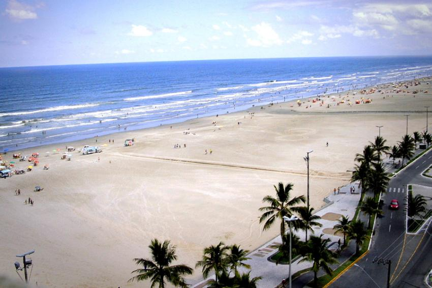
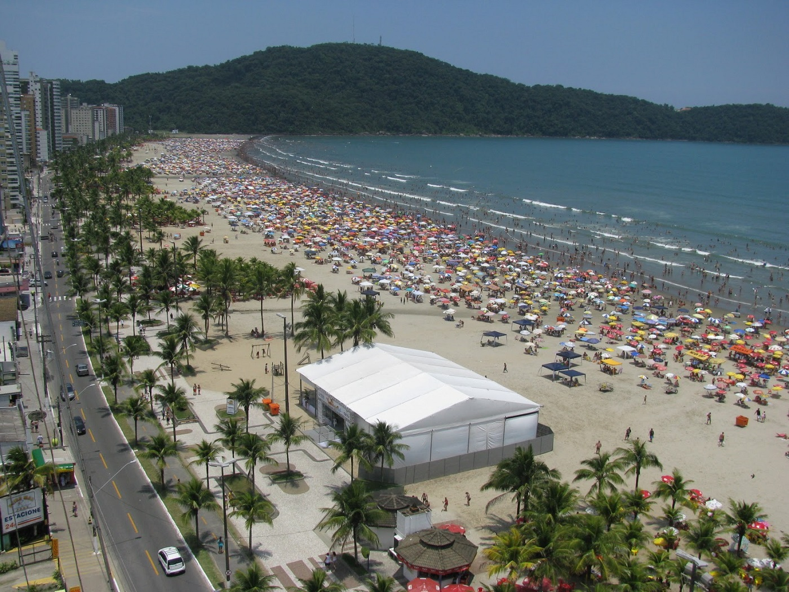
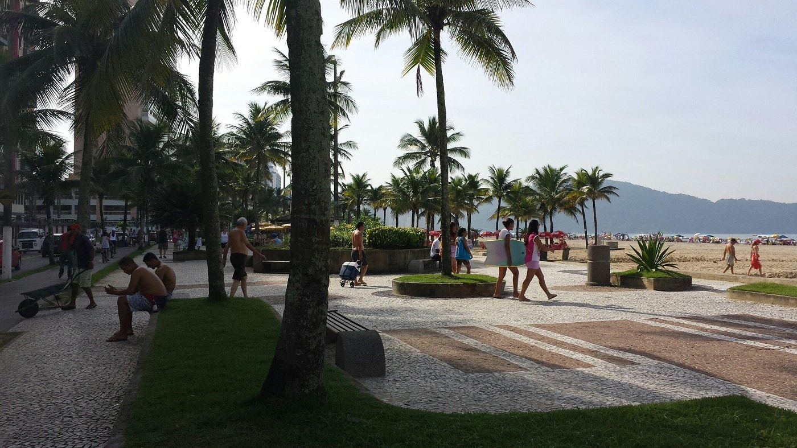

Praia da Aviação
A Praia da Aviação em Praia Grande é extensa (2 km), com faixa de areia larga, escura e dura e mar bom para banhos. Possui calçadão com coqueiros, ciclovia e quiosques. Ela é sede do antigo Aeroclube de Praia Grande, com pista de pouso, hangar, escola de pilotos e aviões que levavam a voos panorâmicos. Atualmente o Aeroclube está desativado. Durante a alta temporada é realizado na Praia da Aviação o projeto O Show do Verão é Você, com shows de artistas famosos.
Praia do Boqueirão
A Praia do Boqueirão em Praia Grande é uma das mais frequentadas da cidade. Localizada no Centro, ela conta com muitos bares e restaurantes, com grande agito noturno nos feriados e na temporada. Ela é extensa (1,5 km), com faixa de areia larga, escura e dura e mar bom para banhos, mas eventualmente poluído. Ela conta com calçadão com coqueiros, posto de informações turísticas, ciclovia e quiosques. Durante a temporada é local de shows e eventos promovidos pela prefeitura.
Praia da Guilhermina
A Praia da Vila Guilhermina em Praia Grande fica próxima do Centro da cidade. Ela possui faixa de areia larga, escura e dura e mar bom para banhos. É uma das mais frequentadas da cidade, já que fica em um dos bairros ocupados. Ela tem calçadão com ciclovia, quiosques e coqueiros, com boa estrutura para atender os banhistas. O bairro conta com boa estrutura comercial e gastronômica. Para hospedagem existem alguns hotéis e pousadas, além de casas e apartamentos para alugar.
Praia Vila Tupi

A Praia da Vila Tupi em Praia Grande é extensa (2 km), com mar bom para banhos e faixa de areia larga, escura e dura, boa para a prática de esportes como bicicleta, futebol e caminhadas. Ela conta com calçadão com coqueiros, ciclovia e quiosques. O bairro é urbanizado, com várias opções comerciais, de serviços e gastronômicas. Para hospedagem existem alguns hotéis e pousadas, além de casas e apartamentos para alugar.
Praia Canto do Forte

A Praia Canto do Forte em Praia Grande fica no canto esquerdo da orla da cidade. Ela é uma das mais frequentadas e fica na região central. Em seu canto esquerdo fica o Morro do Xixová Pequeno, onde fica a Fortaleza de Itaipu, construída em 1902. A fortaleza continua em funcionamento e é aberta para visitas monitoradas. Ela é formada por três fortes:
Praia Vila Caiçara
A praia da Vila Caiçara fica próximo a área nobre de Praia Grande, fora da temporada é tranquila, mas na temporada costuma lotar, o calçadão é bem cuidado e nele se encontram diversos quiosques para bebida e alimentação, pode-se encontrar pousadas e hotéis em preços bem variados.
Praia Vila Mirim
Pouco movimentada fora da temporada, embora lote no verão, mas a região vem crescendo, o calçadão é bem cuidado e se encontram pousadas, hoteis e locais para alimentação nas proximidades.
Praia Ocian
A Praia do Ocian é uma das praias com mar mais agitado de Praia Grande, possui extensão de 1,7 km, é bem movimentada, possui um calçadão, com muitas opções de hotéis e pousadas por perto. A praia possui boa infraestrutura com boas opções de comida.